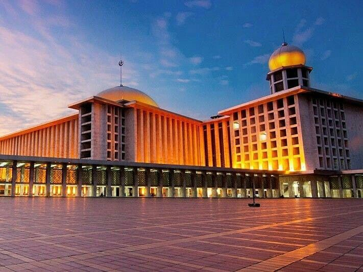
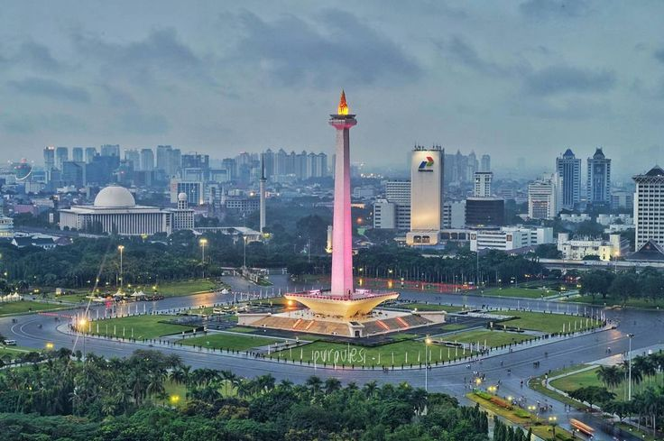
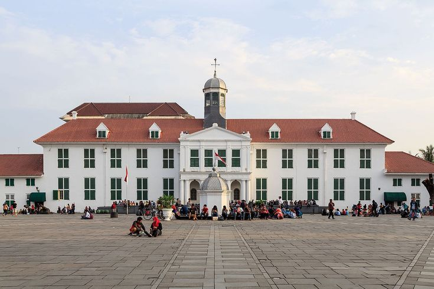

Top Three activities you can do at Jakarta

Visit Istiqlal
The largest mosque in Southeast Asia and a symbol of Indonesia's independence—its name means "freedom." Designed by Friedrich Silaban, it features a massive dome and minimalist modern design, emphasizing scale over ornament. Located across from Jakarta Cathedral, it also represents religius of Islam.

Visit Monas (Monumen Nasional)
The national symbol. Go up the observation deck for a skyline view; the base museum outlines Indonesia's history.

Explore The Jakarta Old Town (Kota tua)
This is Jakarta’s colonial core. You get Dutch-era architecture, museums, and a walkable square (rare in Jakarta). Key stops: Fatahillah Square, Jakarta History Museum, and Cafe Batavia.